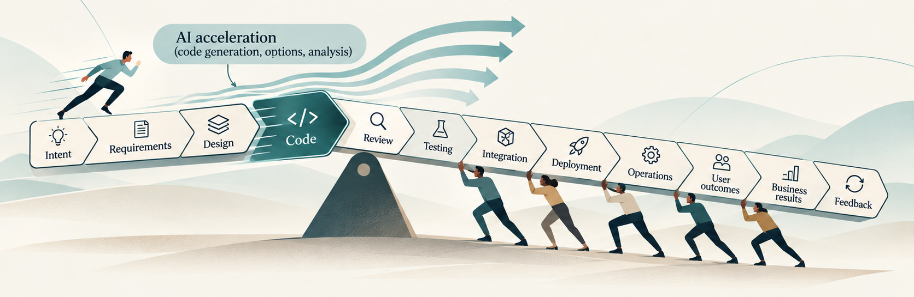
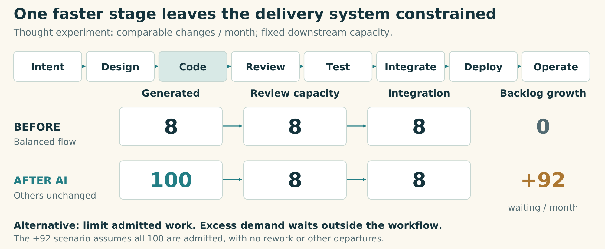
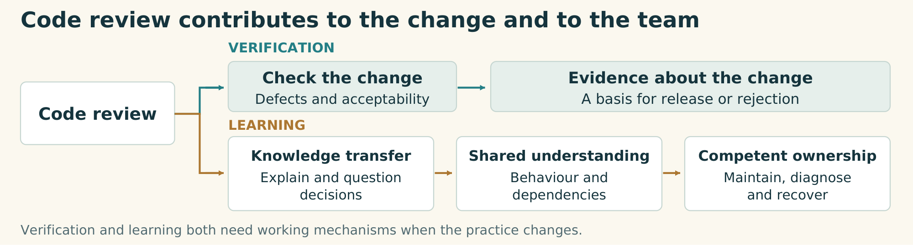
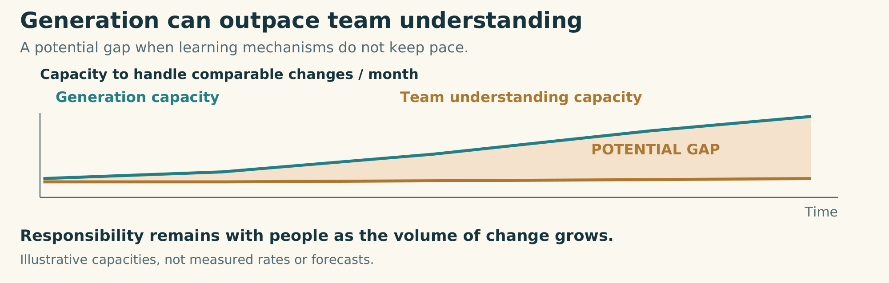
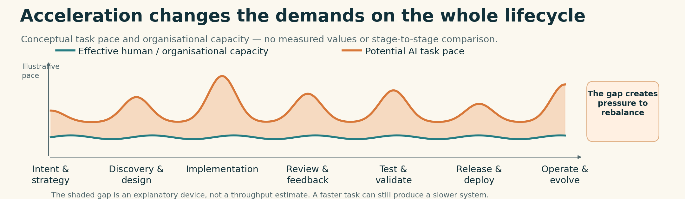

Vitalii Oborskyi · 7 November 2026 · R11 author-review edition · vitaliioborskyi.ai


Machine-speed production does not automatically expand the capacity needed to own the result.
Source and image details
Author-selected AI-assisted editorial illustration from the R2 kit. Original non-brand editorial artwork, CC BY 4.0. Web and current PDF use the existing JPEG. Platform kits use hero-web.png, a lossless decoded copy of that JPEG. The original accepted PNG is retained in source provenance.
The code-review sales story starts with a partial diagnosis
“Code review is the next bottleneck” has become a sales argument. Anthropic’s announcement describes growing review pressure and offers agents to help cover the output. The commercial sequence is straightforward: coding accelerated; automate review next.
That may address a real constraint. But it is a partial problem statement. Turning it into a transformation strategy means treating each subsequent slow stage as the next automation target.
My diagnosis: AI adoption has pushed the SDLC out of balance at industry level. Faster individual activities have changed the demands on everything around them.
Local improvements can become an open-ended sequence: one intervention shifts the constraint; another weakens a capability elsewhere. The business pays for each improvement without assurance of a better end-to-end result. Follow the workstream first; then examine what it leaves out.
Follow the constraint through the delivery system
Start with a deliberately simple model. Intent, design, code, review, testing, integration, deployment and operations can each handle eight comparable changes a month. Work moves through a balanced system.
Now coding capacity rises to 100. What happens to delivery?


Figure 1. One faster stage, unchanged downstream capacity. This is a thought experiment, not measured AI productivity. Comparable changes per month; all generated work admitted; no rework or other departures assumed.
Source and image details
Original explanatory diagram by Vitalii Oborskyi. CC BY 4.0. Conceptual illustration; source distinctions are stated in the caption.
Review still handles eight. So do the other downstream stages. If we admit all 100 changes, unfinished work grows by 92 a month. We have increased the queue while the system’s delivery capacity remains eight.
That pressure has consequences. People may rush checks, defer refactoring or carry more work at once. If poorer changes reach production, repair and support consume capacity that could have improved the system. Maintenance and recovery costs can absorb the gains we expected from cheaper coding. These are risks created by over-admission, not inevitable consequences of generating code.
Suppose we automate review successfully. If testing or integration still handles eight, the constraint moves there. We may need to change several activities and the coordination between them.
Now suppose we solve that too. Review, testing, deployment and operations can all handle 100. Have we secured the business return?
Only if the additional capacity serves an explicit business objective. If the business needs the same valuable outcomes at lower cost, it need not fill the faster pipeline. It may reduce capacity or redirect it toward reliability, quality and maintenance. If the objective is to deliver more useful change, product, business, sales and marketing must discover and validate enough worthwhile work to justify that capacity. This may require changing how opportunities are identified, decisions are made and results evaluated. Producing features merely to keep the pipeline occupied would reverse the purpose of delivery.
Suppose there is enough useful work. Users still need time to discover features, learn them and change their habits. More releases do not automatically increase their capacity to absorb change. Even useful functionality can overwhelm people when adopting it requires too much adjustment.
The target is therefore useful change at sustainable cost. Rebalancing can mean increasing capacity, reducing incoming work or choosing a different scope. Limiting admission keeps internal WIP bounded; excess demand waits outside the workflow. Generated drafts can also be discarded before the organisation accepts responsibility for them.
So far, we have followed a workstream: the sequence through which changes pass. The delivery system also depends on how people learn, share context, make decisions and recover from failures. A local optimisation can improve the flow while weakening one of those relationships.
This is why code review deserves a closer look. The same activity being presented as the next bottleneck also helps the team learn what it will have to own.
Code review reveals the system behind the workstream
Bacchelli and Bird’s research identifies knowledge transfer, team awareness and alternative solutions alongside defect detection.
During a review, the author explains a decision, reviewers question assumptions, and colleagues connect the change to the rest of the system. The code is one output. People can also leave with more usable context about behaviour and dependencies.
That shared understanding supports competent ownership: the ability to judge subsequent changes, maintain the system, diagnose failures and choose a safe recovery. Assigning responsibility establishes who is accountable; it does not, by itself, give that person the knowledge needed to act.


Figure 2. Review supports verification and learning. Review functions: Bacchelli and Bird (2013). The links to competent ownership, maintenance and recovery are the author’s synthesis.
Source and image details
Original diagram by Vitalii Oborskyi. Review functions: Bacchelli and Bird (2013); ownership and recovery links: author systems synthesis. CC BY 4.0.
The comprehension gap appears when generation outpaces the team’s ability to understand what it owns. Delegating code does not delegate responsibility. The volume of accepted changes can grow faster than the knowledge that enables people to carry that responsibility.


Figure 3. A potential comprehension gap when generation scales faster than the team’s learning mechanisms. Illustrative capacities, not measurements or a forecast.
Source and image details
Original explanatory diagram by Vitalii Oborskyi. CC BY 4.0. Conceptual illustration; source distinctions are stated in the caption.
Automating the checking path can remove a queue and part of the learning path at the same time. A replacement workflow needs evidence for both: that changes are checked adequately, and that the team can explain, maintain and recover the resulting system.
The solution need not be everyone reading every line. The Claude Code team’s October account reports higher throughput and a lower reverted share after changing its review process. It distinguishes defect detection from shared understanding, using targeted AI explainers and open working channels while acknowledging no formal process for the latter.
This is also a human learning constraint. People do not acquire understanding at machine generation speed. The same issue can arise in design, testing and operations: each stage may produce more output while the people responsible for connecting it lose usable context.


Figure 4. The same human and organisational capacity problem extends across the lifecycle. Illustrative curves, not measured stage performance.
Source and image details
Original explanatory diagram by Vitalii Oborskyi. CC BY 4.0. Conceptual illustration; source distinctions are stated in the caption.
Rebalancing must protect flow and learning together. Review is one mechanism for this learning. Its practice can change; the necessary functions still need a working replacement.
What the evidence establishes
The reports measure different things. Writing Code vs. Shipping Code finds coding-activity gains exceeding downstream output gains, even as releases increase. That is a reason to investigate what happened between activity and delivery, rather than assume the additional activity established business value.
The 1 November revision of Chen and Stratton’s study, covering 655 firms, estimates that agent adoption increased opened PRs by 35.7% and resolved Jira issues by 13.7%, with the latter borderline significant. Submission-to-approval time increased by 56.1%. This is elapsed time, not reviewer labour hours. The observational estimates distinguish intermediate activity from completed work; neither directly measures customer value.
Related engineering accounts describe pressure beyond code production. Microsoft’s Stephen Toub describes generating PRs faster than expert colleagues could review them. OpenAI and GitHub discuss scarce context and human review capacity.
These sources do not all stop at one queue. DORA 2025 emphasises organisational context; its analysis of Google engineers’ experiences recommends measuring the whole lifecycle. Anthropic’s source-control account identifies builds and CI as constraints too.
The disagreement concerns a review-only diagnosis. The studies and engineering accounts support parts of the mechanism; they do not measure the prevalence of SDLC imbalance across the industry. The broader diagnosis is my systems synthesis, and the business advantage of any intervention still needs demonstration.
Finding a new balance
Once we see both the flow constraint and the learning constraint, “automate the next stage” becomes a hypothesis to examine.
Take agentic review: one model reviews another model’s code. It may scale checking. But could the models share blind spots? What evidence grounds their judgments? And who learns enough from those changes to operate the system? An experiment should examine checking quality and retained understanding, as well as review speed.
Now take living documentation: a model generates an explanation from the code. Who verifies that the explanation is correct? And does understanding that description provide enough understanding to diagnose and recover the actual system? Moving up an abstraction layer does not answer those questions by itself.
Smaller batches, WIP limits, specification-driven work and bounded disposable implementations may help in other parts of the system. They also have conditions and costs. We should test where they help, what they displace and which necessary functions they leave unresolved.
This suggests that we are unlikely to arrive at one universal AI-native SDLC or a single optimal balance. Instead, organisations will need a range of context-specific operating models, each with a different degree of delegation to AI. The appropriate model depends on the work, domain, criticality, organisational capabilities and economics. In some situations, extensive delegation may be justified; in others, limited assistance may be preferable. And sometimes, the sound engineering decision may be not to use AI at all.
A small team sharing roles may coordinate directly; an enterprise may need changes across several teams and business functions. Agent scope can also differ by activity.
A large enterprise cannot assume it will rebalance itself within the investment horizon. Teams, vendors and legacy dependencies need coordinated change. If adjustment takes years or decades, the organisation keeps paying for tools, waiting work, rework and missed opportunities. Eventual adaptation does not erase those accumulated costs.
The objective matters as much as the configuration. For a mature product with stable demand, delivering the same required outcomes at lower total cost can be a rational AI-adoption strategy. Another organisation may prioritise faster experimentation, higher product value or capabilities that were previously too expensive to provide. These are different business hypotheses, not stages on a universal path to progress; each may require a different balance of capacity, controls and delegation.
But cheaper coding or a smaller engineering team is not, by itself, proof of a cheaper delivery system. A cost-reduction strategy needs evidence that total cost of ownership falls over the relevant horizon while the agreed business outcomes, reliability, maintainability and recovery capability remain acceptable. Tool costs, additional verification, operational workload, incidents, complexity and the cost of future changes belong in that assessment. Reducing headcount may be justified; so may redeploying capacity. Neither conclusion follows from local throughput alone.
The aim is an economically and operationally justified configuration of the whole delivery system, rather than maximum AI use or maximum delivery speed.
Someone must own that rebalancing. Give an accountable owner the authority, budget and cross-functional support to change the system, then define a bounded pilot with a baseline, comparable work, success criteria and stop conditions.
For example, trial AI-assisted review on a bounded service against the current process, using comparable changes. Agree in advance what improvement in useful delivery would justify the investment, and what limits must hold for escaped defects, total delivery and operating cost, and workload.
Include a recovery drill in a safe test environment. An engineer who did not author the change uses the access, documentation and tools normally available on call. Can they explain the affected behaviour, diagnose a plausible failure and restore service within the business-defined time? Compare equivalent scenarios before and during the pilot. Investigate failures; a passed drill supports only the scope tested. Faster review cannot compensate for an unacceptable loss of operational capability.
If extensive pilots are unaffordable, narrow the scope. Listen to the team, especially the sceptics. Their concerns may reveal costs that productivity dashboards miss. Examine those observations alongside the benefits; dismissing them as resistance can hide the problems the pilot needs to detect.
Success may mean the same useful outcomes at lower total cost, more value from the same resources, or a newly viable capability. In each case, the operating model must meet its agreed quality, workload and recovery constraints, with people still able to explain, maintain and recover what they own. Keep interventions that achieve the chosen result. Change or stop those that merely move the cost.
Who owns that end-to-end result, and has the means to rebalance it?
This article develops the delivery-system argument from my DevCon Romania talk, AI Changes the Delivery System and the Product Itself, presented on 4 November 2026. Its separate product-side argument concerns control around model judgment at runtime.